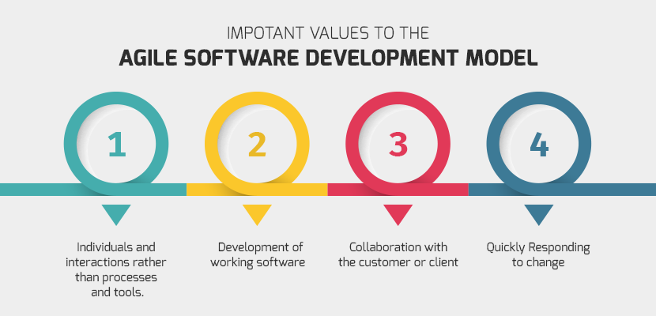
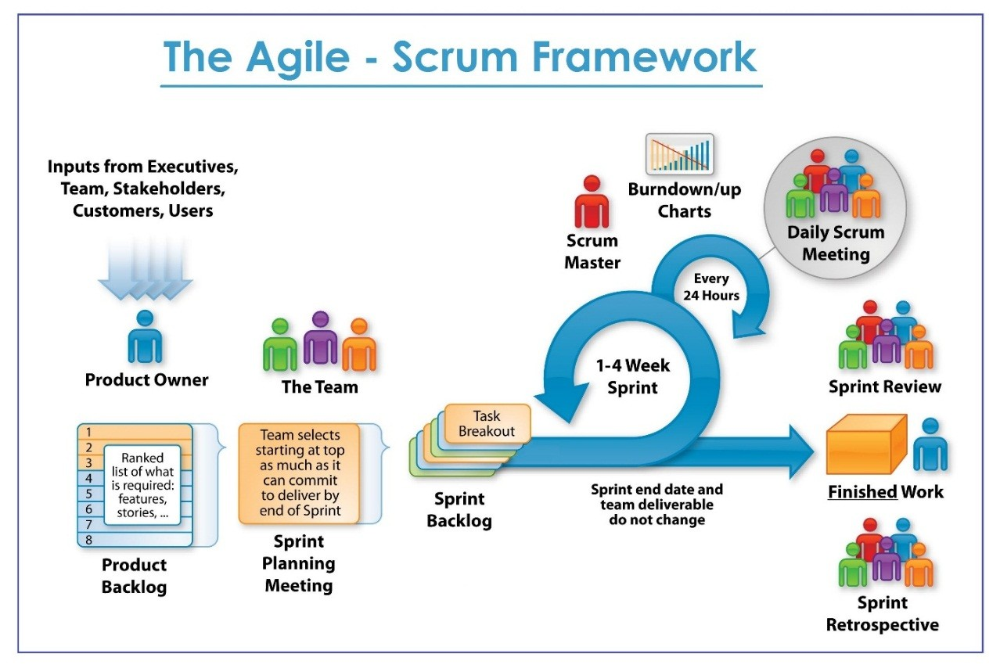
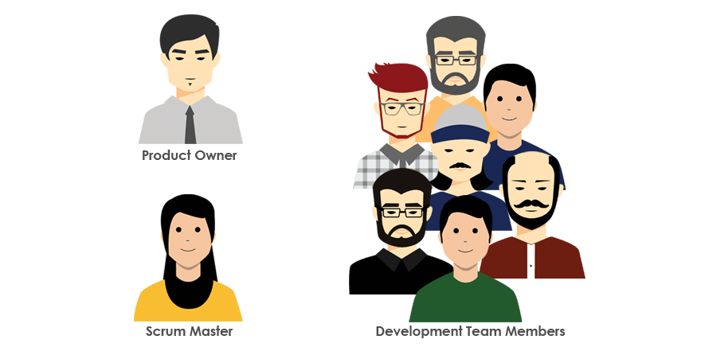
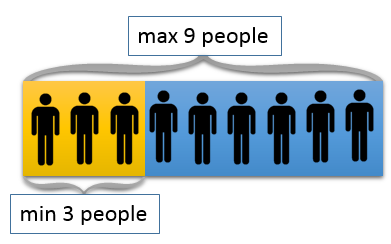

Agile & Scrum
or "How is work doing"
What is Agile?
AGILE is the set of Values and Principles
Any development process built according to Agile values and principles is Agile development.
What is Scrum?
Three Whales
The scrum process is based on "Three Whales":
- Transparency
- Inspection
- Adaptation
Air Conditioner as an example
The Scrum Team
The Scrum Team consists of a Product Owner, the Development Team, and the Scrum Master.
The Product Owner
The Product Owner is the only person responsible for managing the Product Backlog.
The Product Owner is one person, not a committee.
The Development Team
The Development Team consists of professionals who do the work of delivering a potentially releasable Increment of “Done” product at the end of each Sprint. Only members of the Development Team create the Increment.
Development Teams have the following characteristics:
- They are self-organizing. No one (not even the Scrum Master) tells the Development Team how to turn Product Backlog into Increments of potentially releasable functionality;
- Development Teams are cross-functional, with all the skills as a team necessary to create a product Increment;
- Scrum recognizes no sub-teams in the Development Team;
- Individual Development Team members may have specialized skills and areas of focus, but responsibility belongs to the Development Team as a whole.
Optimal Development Team size.
The essence of Scrum is a small team of people. The individual team is highly flexible and adaptive.
The Scrum Master
The Scrum Master is responsible for promoting and supporting Scrum.
Scrum Masters do this by helping everyone understand Scrum theory, practices, rules, and values.
Scrum Events
The Sprint
The heart of Scrum is a Sprint, a time-box of one month or less during which a “Done”, useable, and potentially releasable product Increment is created.
Sprint consist of:
- Sprint Planning
- Daily Scrum
- Sprint Review
- Sprint Retrospective
Each event in Scrum is a formal opportunity to inspect and adapt something.
Scrum Artifacts
- Product Backlog
- Sprint Backlog
- Increment
The Product Backlog is an ordered list of everything that is known to be needed in the product.
The Sprint Backlog is the set of Product Backlog items selected for the Sprint, plus a plan for delivering the product Increment and realizing the Sprint Goal.
The Increment is the sum of all the Product Backlog items completed during a Sprint and the value of the increments of all previous Sprints.